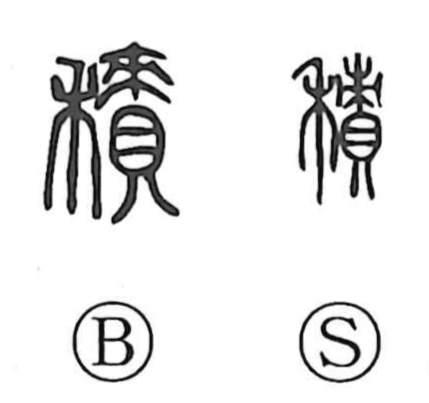

積

Kun: tsumu, tsumoru | On: seki, shaku
to pile up ・ to accumulate ・ to stack up ・ to heap up ・ to store
Explanation
A phono-semantic character: 責 serves as the phonetic, pointing to the reading seki, and in its older form depicts a levy—valuables (shells) gathered as tribute and marked with a post or bundle (束)—that is, property exacted as tax. The semantic 禾 is the rice plant, standing for grain. Together they first named agricultural goods taken in as tribute; from the image of such goods amassed in quantity, the character naturally came to mean to pile up, heap, stack, and to store or reserve.